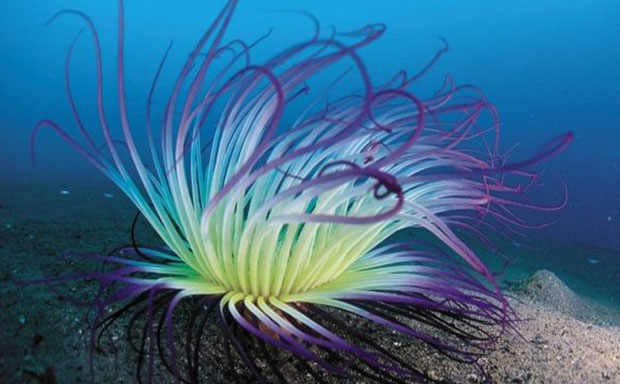
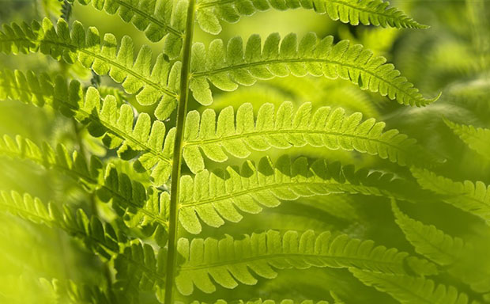
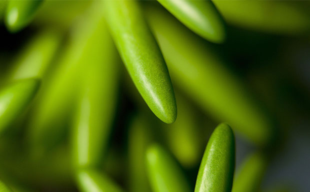
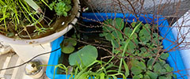
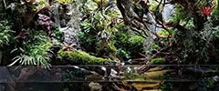

More Website Templates @ TemplateMonster.com - August 1st 2011!
-

原核藻类蓝藻门
无性繁殖
简单的藻类植物
分布很广，多生于淡水。植物体有单细胞、群体或丝状体。细胞无真正的细胞核，原生质体分化为周质和中心质两部分。
-

蕨类植物门羊齿植物
孢子植物
真蕨亚门
大多为土生、石生或附生，少数为湿生或水生，喜阴湿温暖的环境。我国约有2600种，主要分布在长江以南各省区。
-

种子门植物肉肉
多肉植物
多浆植物
非洲是全球最炎热的大陆，但是人们不要据此认为多肉植物都是喜欢炎热的
生态 养殖!

太阳能 生态缸T 上层绿植：苔藓、绿藻，被指植物根茎与薄荷充分精华与过滤水质！ 下层莲藕水下藻类与水流供氧气，水下养殖锦鲤、仙女虾、鳑鲏鱼、贝类，无异常情况无需清理鱼缸正常维持60天！
了解更多
原生态 造景

原生造景 生态缸创意来源于人们常见的有山有水的自然景观，将这种大自然美景微缩到一个生态缸中，从而达到美化居室、陶冶情操的目的。因此，生态缸设置时，除了坚持水草造景缸多样与统一、协调与对比、均衡、韵律和节奏
了解更多